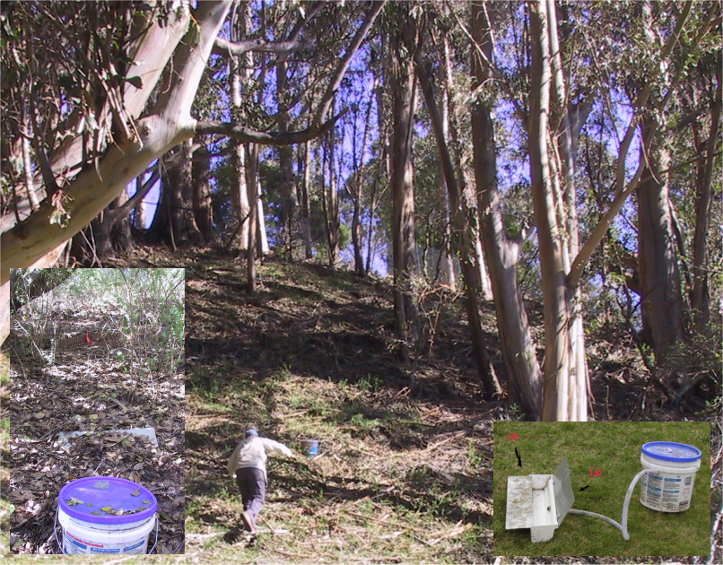

Chapter 3 Data Abstraction
Abstracting data from large data sets (or even small ones) is critical to data science. The most common first step to visualization is abstracting the data in a form that allows for the visualization goal in mind. If you’ve ever worked with data in spreadsheets, you commonly will be faced with some kind of data manipulation to create meaningful graphs, unless that spreadsheet is specifically designed for it, but then doing something else with the data is going to require some work.
FIGURE 3.1: Visualization of some abstracted data from the EPA Toxic Release Inventory
Figure 3.1 started with abstracting some data from EPA’s Toxic Release Inventory (TRI) program, which holds data reported from a large number of facilities that must report either “stack” or “fugitive” air. Some of the abstraction had already happened when I used the EPA website to download data for particular years and only in California. But there’s more we need to do, and we’ll want to use some dplyr functions to help with it.
At this point, we’ve learned the basics of working with the R language. From here we’ll want to explore how to analyze data, statistically, spatially, and temporally. One part of this is abstracting information from existing data sets by selecting variables and observations and summarizing their statistics.
In the previous chapter, we learned some abstraction methods in base R, such as selecting parts of data frames and applying some functions across the data frame. There’s a lot we can do with these methods, and we’ll continue to use them, but they can employ some fairly arcane language. There are many packages that extend R’s functionality, but some of the most important for data science can be found in the various packages of “The Tidyverse” (Wickham and Grolemund 2016), which has the philosophy of making data manipulation more intuitive.
We’ll start with dplyr, which includes an array of data manipulation tools, including select for selecting variables, filter for subsetting observations, summarize for reducing variables to summary statistics, typically stratified by groups, and mutate for creating new variables from mathematical expressions from existing variables. Some dplyr tools such as data joins we’ll look at later in the data transformation chapter.
3.1 The Tidyverse
The tidyverse refers to a suite of R packages developed at RStudio (see https://rstudio.com and <https://r4ds.had.co.nz>) for facilitating data processing and analysis. While R itself is designed around exploratory data analysis, the tidyverse takes it further. Some of the packages in the tidyverse that are widely used are:
dplyr: data manipulation like a databasereadr: better methods for reading and writing rectangular datatidyr: reorganization methods that extend dplyr’s database capabilitiespurrr: expanded programming toolkit including enhanced “apply” methodstibble: improved data framestringr: string manipulation libraryggplot2: graphing system based on the grammar of graphics
In this chapter, we’ll be mostly exploring dplyr, with a few other
things thrown in like reading data frames with readr. For
simplicity, we can just include library(tidyverse) to get everything.
3.2 Tibbles
Tibbles are an improved type of data frame
- part of the tidyverse
- serve the same purpose as a data frame, and all data frame operations work
Advantages
- display better
- can be composed of more complex objects like lists, etc.
- can be grouped
There multiple ways to create a tibble:
- Reading from a CSV using
read_csv(). Note the underscore, a function naming convention in the tidyverse. - Using
tibble()to either build from vectors or from scratch, or convert from a different type of data frame. - Using
tribble()to build in code from scratch. - Using various tidyverse functions that return tibbles.
3.2.1 Building a tibble from vectors
We’ll start by looking at a couple of built-in character vectors (there are lots of things like this in R):
letters: lowercase lettersLETTERS: uppercase letters
letters## [1] "a" "b" "c" "d" "e" "f" "g" "h" "i" "j" "k" "l" "m" "n" "o" "p" "q" "r" "s"
## [20] "t" "u" "v" "w" "x" "y" "z"LETTERS## [1] "A" "B" "C" "D" "E" "F" "G" "H" "I" "J" "K" "L" "M" "N" "O" "P" "Q" "R" "S"
## [20] "T" "U" "V" "W" "X" "Y" "Z"… then make a tibble of letters, LETTERS, and two random sets of 26 values, one normally distributed, the other uniform:
norm <- rnorm(26)
unif <- runif(26)
library(tidyverse)
tibble26 <- tibble(letters,LETTERS,norm,unif)
tibble26## # A tibble: 26 × 4
## letters LETTERS norm unif
## <chr> <chr> <dbl> <dbl>
## 1 a A -1.21 0.0894
## 2 b B 0.682 0.0967
## 3 c C 0.907 0.763
## 4 d D 0.807 0.665
## 5 e E -1.63 0.925
## 6 f F -1.06 0.747
## 7 g G -0.0797 0.227
## 8 h H -0.359 0.956
## 9 i I -1.21 0.811
## 10 j J -0.493 0.832
## # … with 16 more rowsSee section ?? for more on creating random (or rather pseudo-random) numbers in R.
3.2.2 tribble
As long as you don’t let them multiply in your starship, tribbles are handy for creating tibbles. (Or rather the tribble function is a handy way to create tibbles in code.) You simply create the variable names with a series of entries starting with a tilde, then the data are entered one row at a time. If you line them all up in your code one row at a time, it’s easy to enter the data accurately (Table 3.1).
peaks <- tribble(
~peak, ~elev, ~longitude, ~latitude,
"Mt. Whitney", 4421, -118.2, 36.5,
"Mt. Elbert", 4401, -106.4, 39.1,
"Mt. Hood", 3428, -121.7, 45.4,
"Mt. Rainier", 4392, -121.8, 46.9)
knitr::kable(peaks, caption = 'Peaks tibble')| peak | elev | longitude | latitude |
|---|---|---|---|
| Mt. Whitney | 4421 | -118.2 | 36.5 |
| Mt. Elbert | 4401 | -106.4 | 39.1 |
| Mt. Hood | 3428 | -121.7 | 45.4 |
| Mt. Rainier | 4392 | -121.8 | 46.9 |
3.2.3 read_csv
The read_csv function does somewhat the same thing as read.csv in base R, but creates a tibble instead of a data.frame, and has some other properties we’ll look at below.
Note that the code below accesses data we’ll be using a lot, from EPA Toxic Release Inventory (TRI) data. If you want to keep this data organized in a separate project, you might consider creating a new
air_qualityproject. This is optional, and you can get by with staying in one project since all of our data will be accessed from theigiscipackage. But in your own work, you will find it useful to create separate projects to keep things organized with your code and data together.
library(tidyverse); library(igisci)
TRI87 <- read_csv(ex("TRI/TRI_1987_BaySites.csv"))
TRI87df <- read.csv(ex("TRI/TRI_1987_BaySites.csv"))
TRI87b <- tibble(TRI87df)
identical(TRI87, TRI87b)## [1] FALSENote that they’re not identical. So what’s the difference between
read_csv and read.csv? Why would we use one over the other?
Since their names are so similar, you may accidentally choose one or the other. Some things to consider:
- To use read_csv, you need to load the
readrortidyverselibrary, or usereadr::read_csv. - The
read.csvfunction “fixes” some things and sometimes that might be desired: problematic variable names likeMLY-TAVG-NORMALbecomeMLY.TAVG.NORMAL– but this may create problems if those original names are a standard designation. - With
read.csv, numbers stored as characters are converted to numbers: “01” becomes 1, “02” becomes 2, etc. - There are other known problems that read_csv avoids.
Recommendation: Use read_csv and write_csv.
You can still just call tibbles “data frames”, since they are still data frames, and in this book we’ll follow that practice.
3.3 Summarizing variable distributions
A simple statistical summary is very easy to do in R, and we’ll use eucoak data in the igisci package from a study of comparative runoff and erosion under eucalyptus and oak canopies (Thompson, Davis, and Oliphant 2016). In this study, we looked at the amount of runoff and erosion captured in Gerlach troughs on paired eucalyptus and oak sites in the San Francisco Bay Area.
Euc-Oak paired plot runoff and erosion study (Thompson, Davis, and Oliphant (2016)) 
library(igisci)
summary(eucoakrainfallrunoffTDR)## site site # date month
## Length:90 Min. :1.000 Length:90 Length:90
## Class :character 1st Qu.:2.000 Class :character Class :character
## Mode :character Median :4.000 Mode :character Mode :character
## Mean :4.422
## 3rd Qu.:6.000
## Max. :8.000
##
## rain_mm rain_oak rain_euc runoffL_oak
## Min. : 1.00 Min. : 1.00 Min. : 1.00 Min. : 0.000
## 1st Qu.:16.00 1st Qu.:16.00 1st Qu.:14.75 1st Qu.: 0.000
## Median :28.50 Median :30.50 Median :30.00 Median : 0.450
## Mean :37.99 Mean :35.08 Mean :34.60 Mean : 2.032
## 3rd Qu.:63.25 3rd Qu.:50.50 3rd Qu.:50.00 3rd Qu.: 2.800
## Max. :99.00 Max. :98.00 Max. :96.00 Max. :14.000
## NA's :18 NA's :2 NA's :2 NA's :5
## runoffL_euc slope_oak slope_euc aspect_oak
## Min. : 0.00 Min. : 9.00 Min. : 9.00 Min. :100.0
## 1st Qu.: 0.07 1st Qu.:12.00 1st Qu.:12.00 1st Qu.:143.0
## Median : 1.20 Median :24.50 Median :23.00 Median :189.0
## Mean : 2.45 Mean :21.62 Mean :19.34 Mean :181.9
## 3rd Qu.: 3.30 3rd Qu.:30.50 3rd Qu.:25.00 3rd Qu.:220.0
## Max. :16.00 Max. :32.00 Max. :31.00 Max. :264.0
## NA's :3
## aspect_euc surface_tension_oak surface_tension_euc
## Min. :106.0 Min. :37.40 Min. :28.51
## 1st Qu.:175.0 1st Qu.:72.75 1st Qu.:32.79
## Median :196.5 Median :72.75 Median :37.40
## Mean :191.2 Mean :68.35 Mean :43.11
## 3rd Qu.:224.0 3rd Qu.:72.75 3rd Qu.:56.41
## Max. :296.0 Max. :72.75 Max. :72.75
## NA's :22 NA's :22
## runoff_rainfall_ratio_oak runoff_rainfall_ratio_euc
## Min. :0.00000 Min. :0.000000
## 1st Qu.:0.00000 1st Qu.:0.003027
## Median :0.02046 Median :0.047619
## Mean :0.05357 Mean :0.065902
## 3rd Qu.:0.08485 3rd Qu.:0.083603
## Max. :0.42000 Max. :0.335652
## NA's :5 NA's :3In the summary output, how are character variables handled differently from numeric ones?
Remembering what we discussed in the previous chapter, consider the site variable (Figure 3.2), and in particular its Length. Looking at the table, what does that length represent?
FIGURE 3.2: Eucalyptus/Oak paired site locations
There are a couple of ways of seeing what unique values exist in a
character variable like site which can be considered a categorical
variable (factor). Consider what these return:
unique(eucoakrainfallrunoffTDR$site)## [1] "AB1" "AB2" "KM1" "PR1" "TP1" "TP2" "TP3" "TP4"factor(eucoakrainfallrunoffTDR$site)## [1] AB1 AB1 AB1 AB1 AB1 AB1 AB1 AB1 AB1 AB1 AB1 AB1 AB2 AB2 AB2 AB2 AB2 AB2 AB2
## [20] AB2 AB2 AB2 AB2 AB2 KM1 KM1 KM1 KM1 KM1 KM1 KM1 KM1 KM1 KM1 KM1 KM1 PR1 PR1
## [39] PR1 PR1 PR1 PR1 PR1 PR1 PR1 PR1 TP1 TP1 TP1 TP1 TP1 TP1 TP1 TP1 TP1 TP1 TP1
## [58] TP2 TP2 TP2 TP2 TP2 TP2 TP2 TP2 TP2 TP2 TP2 TP3 TP3 TP3 TP3 TP3 TP3 TP3 TP3
## [77] TP3 TP3 TP3 TP4 TP4 TP4 TP4 TP4 TP4 TP4 TP4 TP4 TP4 TP4
## Levels: AB1 AB2 KM1 PR1 TP1 TP2 TP3 TP43.3.1 Stratifying variables by site using a Tukey box plot
A good way to look at variable distributions stratified by a sample site factor is the Tukey box plot (Figure 3.3). We’ll be looking more at this and other visualization methods in the next chapter.
ggplot(data = eucoakrainfallrunoffTDR) +
geom_boxplot(mapping = aes(x=site, y=runoffL_euc))FIGURE 3.3: Tukey boxplot of runoff under eucalyptus canopy
3.4 Database operations with dplyr
As part of exploring our data, we’ll typically simplify or reduce it for our purposes. The following methods are quickly discovered to be essential as part of exploring and analyzing data.
- select rows using logic, such as
population \> 10000, withfilter - select variable columns you want to retain with
select - add new variables and assign their values with
mutate - sort rows based on a field with
arrange - summarize by group
3.4.1 Select, mutate, and the pipe
Read the pipe operator %>% as “and then…” This is bigger than it
sounds and opens up many possibilities.
See the example below, and observe how the expression becomes several lines long. In the process, we’ll see examples of new variables with mutate and selecting (and in the process ordering) variables (Table 3.2).
runoff <- eucoakrainfallrunoffTDR %>%
mutate(Date = as.Date(date,"%m/%d/%Y"),
rain_subcanopy = (rain_oak + rain_euc)/2) %>%
dplyr::select(site, Date, rain_mm, rain_subcanopy,
runoffL_oak, runoffL_euc, slope_oak, slope_euc)| site | Date | rain_mm | rain_subcanopy | runoffL_oak | runoffL_euc | slope_oak | slope_euc |
|---|---|---|---|---|---|---|---|
| AB1 | 2006-11-08 | 29 | 29.0 | 4.7900 | 6.70000 | 32 | 31 |
| AB1 | 2006-11-12 | 22 | 18.5 | 3.2000 | 4.30000 | 32 | 31 |
| AB1 | 2006-11-29 | 85 | 65.0 | 9.7000 | 16.00000 | 32 | 31 |
| AB1 | 2006-12-12 | 82 | 87.5 | 14.0000 | 14.20000 | 32 | 31 |
| AB1 | 2006-12-28 | 43 | 54.0 | 9.7472 | 4.32532 | 32 | 31 |
| AB1 | 2007-01-29 | 7 | 54.0 | 1.4000 | 0.00000 | 32 | 31 |
Another way of thinking of the pipe that is very useful is that whatever goes before it becomes the first parameter for any functions that follow. So in the example above:
- The parameter
eucoakrainfallrunoffTDRbecomes the first formutate(), then - The result of the
mutate()becomes the first parameter fordplyr::select()
To just rename a variable, use
renameinstead ofmutate. It will stay in position.
3.4.1.1 Review: creating penguins from penguins_raw
To review some of these methods, it’s useful to consider how the penguins data frame was created from the more complex penguins_raw data frame, both of which are part of the palmerpenguins package (Horst, Hill, and Gorman (2020)). First let’s look at palmerpenguins::penguins_raw:
library(palmerpenguins)
library(tidyverse)
library(lubridate)
summary(penguins_raw)## studyName Sample Number Species Region
## Length:344 Min. : 1.00 Length:344 Length:344
## Class :character 1st Qu.: 29.00 Class :character Class :character
## Mode :character Median : 58.00 Mode :character Mode :character
## Mean : 63.15
## 3rd Qu.: 95.25
## Max. :152.00
##
## Island Stage Individual ID Clutch Completion
## Length:344 Length:344 Length:344 Length:344
## Class :character Class :character Class :character Class :character
## Mode :character Mode :character Mode :character Mode :character
##
##
##
##
## Date Egg Culmen Length (mm) Culmen Depth (mm) Flipper Length (mm)
## Min. :2007-11-09 Min. :32.10 Min. :13.10 Min. :172.0
## 1st Qu.:2007-11-28 1st Qu.:39.23 1st Qu.:15.60 1st Qu.:190.0
## Median :2008-11-09 Median :44.45 Median :17.30 Median :197.0
## Mean :2008-11-27 Mean :43.92 Mean :17.15 Mean :200.9
## 3rd Qu.:2009-11-16 3rd Qu.:48.50 3rd Qu.:18.70 3rd Qu.:213.0
## Max. :2009-12-01 Max. :59.60 Max. :21.50 Max. :231.0
## NA's :2 NA's :2 NA's :2
## Body Mass (g) Sex Delta 15 N (o/oo) Delta 13 C (o/oo)
## Min. :2700 Length:344 Min. : 7.632 Min. :-27.02
## 1st Qu.:3550 Class :character 1st Qu.: 8.300 1st Qu.:-26.32
## Median :4050 Mode :character Median : 8.652 Median :-25.83
## Mean :4202 Mean : 8.733 Mean :-25.69
## 3rd Qu.:4750 3rd Qu.: 9.172 3rd Qu.:-25.06
## Max. :6300 Max. :10.025 Max. :-23.79
## NA's :2 NA's :14 NA's :13
## Comments
## Length:344
## Class :character
## Mode :character
##
##
##
## Now let’s create the simpler penguins data frame. We’ll use rename for a couple, but most variables require mutation to manipulate strings (we’ll get to that later), create factors, or convert to integers. And we’ll rename some variables to avoid using backticks (the backward single quotation mark accessed just to the left of the 1 key and below the Esc key, and what you can use in markdown to create a monospaced font as I just used for 1 and Esc).
penguins <- penguins_raw %>%
rename(bill_length_mm = `Culmen Length (mm)`,
bill_depth_mm = `Culmen Depth (mm)`) %>%
mutate(species = factor(word(Species)),
island = factor(Island),
flipper_length_mm = as.integer(`Flipper Length (mm)`),
body_mass_g = as.integer(`Body Mass (g)`),
sex = factor(str_to_lower(Sex)),
year = as.integer(year(ymd(`Date Egg`)))) %>%
dplyr::select(species, island, bill_length_mm, bill_depth_mm,
flipper_length_mm, body_mass_g, sex, year)
summary(penguins)## species island bill_length_mm bill_depth_mm
## Adelie :152 Biscoe :168 Min. :32.10 Min. :13.10
## Chinstrap: 68 Dream :124 1st Qu.:39.23 1st Qu.:15.60
## Gentoo :124 Torgersen: 52 Median :44.45 Median :17.30
## Mean :43.92 Mean :17.15
## 3rd Qu.:48.50 3rd Qu.:18.70
## Max. :59.60 Max. :21.50
## NA's :2 NA's :2
## flipper_length_mm body_mass_g sex year
## Min. :172.0 Min. :2700 female:165 Min. :2007
## 1st Qu.:190.0 1st Qu.:3550 male :168 1st Qu.:2007
## Median :197.0 Median :4050 NA's : 11 Median :2008
## Mean :200.9 Mean :4202 Mean :2008
## 3rd Qu.:213.0 3rd Qu.:4750 3rd Qu.:2009
## Max. :231.0 Max. :6300 Max. :2009
## NA's :2 NA's :2Unfortunately, they don’t end up as exactly identical, though all of the variables are identical as vectors:
identical(penguins, palmerpenguins::penguins)## [1] FALSE3.4.1.2 Helper functions for dplyr::select()
In the select() example above, we listed all of the variables, but there are a variety of helper functions for using logic to specify which variables to select. Here are a few:
contains("_")or any substring of interest in the variable namestarts_with("runoff")ends_with("euc")num_range("x",1:5)for the common situation where a series of variable names combine a string and a number- range of variables: e.g.
runoffL_oak:slope_euccould have followedrain_subcanopyabove - all but: preface a variable or a set of variable names with
-to select all others
3.4.2 filter
filter lets you select observations that meet criteria, similar to an SQL WHERE clause (Table 3.3).
runoff2007 <- runoff %>%
filter(Date >= as.Date("04/01/2007", "%m/%d/%Y"))| site | Date | rain_mm | rain_subcanopy | runoffL_oak | runoffL_euc | slope_oak | slope_euc |
|---|---|---|---|---|---|---|---|
| AB1 | 2007-04-23 | NA | 33.5 | 6.94488 | 9.19892 | 32.0 | 31 |
| AB1 | 2007-05-05 | NA | 31.0 | 6.33568 | 7.43224 | 32.0 | 31 |
| AB2 | 2007-04-23 | 23 | 35.5 | 4.32000 | 2.88000 | 24.0 | 25 |
| AB2 | 2007-05-05 | 11 | 25.5 | 4.98000 | 3.30000 | 24.0 | 25 |
| KM1 | 2007-04-23 | NA | 37.0 | 1.56000 | 2.04000 | 30.5 | 25 |
| KM1 | 2007-05-05 | 28 | 22.0 | 1.32000 | 1.32000 | 30.5 | 25 |
3.4.2.1 Filtering out NA with !is.na
Here’s a really important one. There are many times you need to avoid NAs. We thus commonly see summary statistics using na.rm = TRUE in order to ignore NAs when calculating a statistic like mean.
To simply filter out NAs from a vector or a variable use a filter:
feb_filt <- sierraFeb %>% filter(!is.na(TEMPERATURE))3.4.3 Writing a data frame to a csv
Let’s say you have created a data frame, maybe with read_csv
runoff20062007 <- read_csv(ex("eucoak/eucoakrainfallrunoffTDR.csv"))
Then you do some processing to change it, maybe adding variables, reorganizing, etc., and you want to write out your new eucoak, so you just need to use write_csv
write_csv(eucoak, "data/tidy_eucoak.csv")
Note the use of a data folder
data: Remember that your default workspace (wdfor working directory) is where your project file resides (check what it is withgetwd()), so by default you’re saving things in that wd. To keep things organized the above code is placing data in a data folder within the wd.
3.4.4 Summarize by group
You’ll find that you need to use this all the time with real data. Let’s say you have a bunch of data where some categorical variable is defining a grouping, like our site field in the eucoak data. This is a form of stratifying our data. We’d like to just create average slope, rainfall, and runoff for each site. Note that it involves two steps, first defining which field defines the group, then the various summary statistics we’d like to store. In this case, all of the slopes under oak remain the same for a given site – it’s a site characteristic – and the same applies to the euc site, so we can just grab the first value (mean would have also worked of course) (Table 3.4).
eucoakSiteAvg <- runoff %>%
group_by(site) %>%
summarize(
rain = mean(rain_mm, na.rm = TRUE),
rain_subcanopy = mean(rain_subcanopy, na.rm = TRUE),
runoffL_oak = mean(runoffL_oak, na.rm = TRUE),
runoffL_euc = mean(runoffL_euc, na.rm = TRUE),
slope_oak = first(slope_oak),
slope_euc = first(slope_euc)
)| site | rain | rain_subcanopy | runoffL_oak | runoffL_euc | slope_oak | slope_euc |
|---|---|---|---|---|---|---|
| AB1 | 48.37500 | 43.08333 | 6.8018364 | 6.026523 | 32.0 | 31 |
| AB2 | 34.08333 | 35.37500 | 4.9113636 | 3.654545 | 24.0 | 25 |
| KM1 | 48.00000 | 36.12500 | 1.9362500 | 0.592500 | 30.5 | 25 |
| PR1 | 56.50000 | 37.56250 | 0.4585714 | 2.310000 | 27.0 | 23 |
| TP1 | 38.36364 | 30.04545 | 0.8772727 | 1.657273 | 9.0 | 9 |
| TP2 | 34.33333 | 32.86364 | 0.0954545 | 1.525454 | 12.0 | 10 |
Summarizing by group with TRI data
library(igisci)
TRI_BySite <- read_csv(ex("TRI/TRI_2017_CA.csv")) %>%
mutate(all_air = `5.1_FUGITIVE_AIR` + `5.2_STACK_AIR`) %>%
filter(all_air > 0) %>%
group_by(FACILITY_NAME) %>%
summarize(
FACILITY_NAME = first(FACILITY_NAME),
air_releases = sum(all_air, na.rm = TRUE),
mean_fugitive = mean(`5.1_FUGITIVE_AIR`, na.rm = TRUE),
LATITUDE = first(LATITUDE), LONGITUDE = first(LONGITUDE))3.4.5 Count
The count function is a simple variant on summarizing by group, since the only statistic is the count of events. See https://bookdown.org/igisc/EnvDataSci/ for more on this.
tidy_eucoak %>% count(tree)## # A tibble: 2 × 2
## tree n
## <chr> <int>
## 1 euc 90
## 2 oak 903.4.6 Sorting after summarizing
Using the marine debris data from the Marine Debris Monitoring and Assessment Project (Marine Debris Program, n.d.), we can use arrange to sort by latitude, so we can see the beaches from south to north along the Pacific coast.
shorelineLatLong <- ConcentrationReport %>%
group_by(`Shoreline Name`) %>%
summarize(
latitude = mean((`Latitude Start`+`Latitude End`)/2),
longitude = mean((`Longitude Start`+`Longitude End`)/2)
) %>%
arrange(latitude)
shorelineLatLong## # A tibble: 38 × 3
## `Shoreline Name` latitude longitude
## <chr> <dbl> <dbl>
## 1 Aimee Arvidson 33.6 -118.
## 2 Balboa Pier #2 33.6 -118.
## 3 Bolsa Chica 33.7 -118.
## 4 Junipero Beach 33.8 -118.
## 5 Malaga Cove 33.8 -118.
## 6 Zuma Beach, Malibu 34.0 -119.
## 7 Zuma Beach 34.0 -119.
## 8 Will Rodgers 34.0 -119.
## 9 Carbon Beach 34.0 -119.
## 10 Nicholas Canyon 34.0 -119.
## # … with 28 more rows3.5 String abstraction
Character string manipulation is surprisingly critical to data analysis, and so the stringr package was developed to provide a wider array of string processing tools than what is in base R, including functions for detecting matches, subsetting strings, managing lengths, replacing substrings with other text, and joining, splitting, and sorting strings.
We’ll look at just a couple of stringr functions (there is more coverage in https://bookdown.org/igisc/EnvDataSci ). We’ll use a built-in dataset of fruit names: fruit.
library(stringr)
fruit## [1] "apple" "apricot" "avocado"
## [4] "banana" "bell pepper" "bilberry"
## [7] "blackberry" "blackcurrant" "blood orange"
## [10] "blueberry" "boysenberry" "breadfruit"
## [13] "canary melon" "cantaloupe" "cherimoya"
## [16] "cherry" "chili pepper" "clementine"
## [19] "cloudberry" "coconut" "cranberry"
## [22] "cucumber" "currant" "damson"
## [25] "date" "dragonfruit" "durian"
## [28] "eggplant" "elderberry" "feijoa"
## [31] "fig" "goji berry" "gooseberry"
## [34] "grape" "grapefruit" "guava"
## [37] "honeydew" "huckleberry" "jackfruit"
## [40] "jambul" "jujube" "kiwi fruit"
## [43] "kumquat" "lemon" "lime"
## [46] "loquat" "lychee" "mandarine"
## [49] "mango" "mulberry" "nectarine"
## [52] "nut" "olive" "orange"
## [55] "pamelo" "papaya" "passionfruit"
## [58] "peach" "pear" "persimmon"
## [61] "physalis" "pineapple" "plum"
## [64] "pomegranate" "pomelo" "purple mangosteen"
## [67] "quince" "raisin" "rambutan"
## [70] "raspberry" "redcurrant" "rock melon"
## [73] "salal berry" "satsuma" "star fruit"
## [76] "strawberry" "tamarillo" "tangerine"
## [79] "ugli fruit" "watermelon"Then just a couple of simple but very useful stringr functions: (1) subsetting a list of strings to those with a “q” in them
qfruit <- str_subset(fruit,"q")
qfruit## [1] "kumquat" "loquat" "quince"and (2) replacing all “q”s with “z”s:
str_replace(qfruit,"q","z")## [1] "kumzuat" "lozuat" "zuince"There are also base R methods that work well, for instance paste and paste0 that concatenate strings (similar to stringr’s str_c), either with a space padding (paste) or not (paste0).
phrase <- paste("for","whom","the","bell","tolls")
phrase## [1] "for whom the bell tolls"drive <- "C:/"
folder <- "data"
paste0(drive,folder)## [1] "C:/data"The stringr package also has a str_split function that can separate a longer string using a specified split character. This is often useful:
str_split(phrase," ")## [[1]]
## [1] "for" "whom" "the" "bell" "tolls"Example of str_c use to modify a variable needed for a join:
library(tidyverse)
csvPath <- system.file("extdata","CA/CA_MdInc.csv",package="igisci")
CA_MdInc <- read_csv(csvPath)
join_id <- paste0("0",CA_MdInc$NAME)
# could also use str_pad(CA_MdInc$NAME,1,side="left",pad="0")
head(CA_MdInc)## # A tibble: 6 × 3
## trID NAME HHinc2016
## <dbl> <dbl> <dbl>
## 1 6001400100 60014001 177417
## 2 6001400200 60014002 153125
## 3 6001400300 60014003 85313
## 4 6001400400 60014004 99539
## 5 6001400500 60014005 83650
## 6 6001400600 60014006 61597head(join_id)## [1] "060014001" "060014002" "060014003" "060014004" "060014005" "060014006"There’s a lot more to string operations. See the cheat sheet at: https://www.rstudio.com/resources/cheatsheets/.
3.6 Calling functions explicitly with ::
Sometimes you need to specify the package and function name this way, for instance, if more than one package has a function of the same name. You can also use this method to call a function without having loaded its library. Due to multiple packages having certain common names (like select), it’s common to use this syntax, and you’ll find that we’ll use dplyr::select(...) throughout this book.
3.7 Exercises: Data Abstraction
Exercise 3.1 Create a tibble with 20 rows of two variables norm and unif with norm created with rnorm() and unif created with runif().
Exercise 3.2 Read in “TRI/TRI_2017_CA.csv” in two ways, as a normal data frame assigned to df and as a tibble assigned to tbl. What field names result for what’s listed in the CSV as 5.1_FUGITIVE_AIR?
Exercise 3.3 Use the summary function to investigate the variables in either the data.frame or tibble you just created. What type of field and what values are assigned to BIA_CODE?
Exercise 3.4 Create a boxplot of body_mass_g by species from the penguins data frame in the palmerpenguins package (Horst, Hill, and Gorman 2020).
Exercise 3.5 Use select, mutate, and the pipe to create a penguinMass tibble where the only original variable retained is species, but with body_mass_kg created as \(\frac{1}{1000}\) the body_mass_g. The statement should start with penguinMass <- penguins and use a pipe plus the other functions after that.
Exercise 3.6 Now, also with penguins, create FemaleChinstaps to include only the female Chinstrap penguins. Start with FemaleChinstraps <- penguins %>%
Exercise 3.7 Now, summarize by species groups to create mean and standard deviation variables from bill_length_mm, bill_depth_mm, flipper_length_mm, and body_mass_g. Preface the variable names with either avg. or sd. Include na.rm=T with all statistics function calls.
Exercise 3.8 Sort the penguins by body_mass_g.